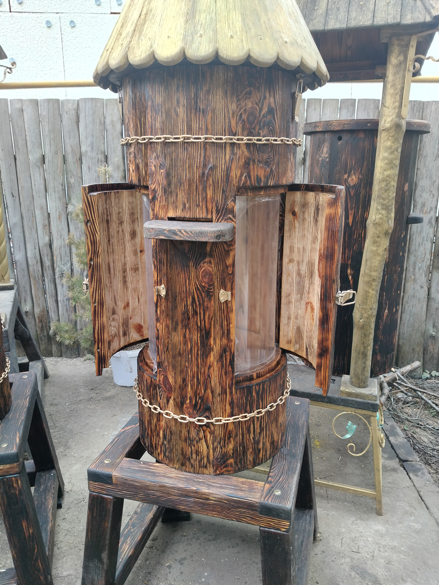

Традиційні колоди для вашої пасіки
Створюють ідеальний мікроклімат та природні умови для здорового життя бджолиних сімей.
Прекрасний вибір для спостереження за бджолами, відпочинку душі та збору екологічного меду.

Оглядова колода без рамок. У верхній частині розташовані планочки, від яких бджоли відбудовують стільники.
Висота виробу: 2 м 30 см